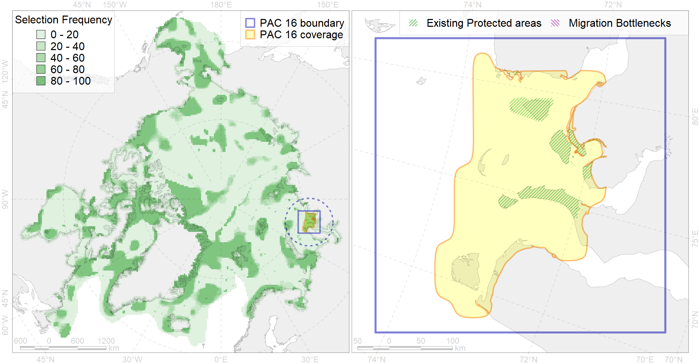

Region 16
Region 16
“ArcNet” scenario 33 achievement for region 16.
Use Accenter for advanced mode.

0
CFs inside of Region completely
7
CFs inside of Region at quarter
9
Complete-targets achievement by Region
16
Half-targets achievement by Region
| CF | Name | Target Achievement for Region | Proportion of Target Achievement in Region | Amount Proportion in Region |
|---|---|---|---|---|
| 7013 | Core of Ob-Yenissean brackishwater Province | 187.5% | 92.9% | 56.4% |
| 3114 | polynya Kara mainland | 407.4% | 94.6% | 51.3% |
| 7112 | II.1.1.6. Ob-Yenissean estuarine region | 373.3% | 93.0% | 40.1% |
| 3011 | Fast ice distribution in the Western part of the Kara Sea | 569.2% | 86.7% | 35.5% |
| 4093 | Estuarian (Ob’-Enissey) brackish–water fish complex | 550.5% | 91.3% | 34.4% |
| 7100 | II.1.1.1. Eastern Kara coastal domain, outside of the Ob-Yenissean Estuary (see Fig. 3 for northern boundary of estuarine area) | 213.3% | 79.1% | 30.4% |
| 6043 | Stellers eider (Polysticta stelleri) Atlantic moulting&migration stopovers | 53.4% | 37.8% | 28.5% |
| 3116 | polynya Yamal | 187.7% | 64.5% | 23.5% |
| 6020 | Long-tailed duck (Clangula hyemalis) North East Atlantic moulting&migration stopovers | 27.7% | 27.7% | 21.9% |
| 8033 | Salt marshes of the Kara Sea LME | 68.8% | 68.2% | 21.5% |
| 8026 | intertidal zone of the Kara Sea LME | 113.7% | 45.5% | 20.5% |
| 2049 | Ringed seal whelping areas in the Kara Sea | 71.7% | 37.9% | 17.9% |
| 6006 | Brent goose (Branta bernicla bernicla) breeding&moulting grounds | 91.2% | 28.4% | 17.0% |
| 9028 | polar bear denning areas of KS (Kara Sea) subpopulation | 25.9% | 25.8% | 14.0% |
| 7065 | I.1.1.2. Coastal domain in the south-western Kara Sea | 66.9% | 51.4% | 11.7% |
| 4061 | Feeding/nursery area of the Siberian sturgeon (Acipenser baerii) (F4) | 28.2% | 28.1% | 10.9% |
| 4010 | Feeding area of the Muksun (Coregonus muksun) (F 15) | 30.0% | 29.7% | 10.2% |
| 4043 | Range of Nawaga (Eleginus nawaga) (F37) | 79.6% | 22.7% | 9.9% |
| 2011 | Bearded seal whelping areas in the Kara Sea | 35.6% | 34.8% | 9.0% |
| 1007 | Atlantic Walrus haulouts in Pechora and Kara region | 9.1% | 8.8% | 8.7% |
| 4015 | Feeding area of the Broad whitefish (Coregonus nasus), American populations (F 19) | 25.5% | 21.8% | 8.6% |
| 3027 | Marginal Ice Zone distribution in April in the Kara Sea LME | 64.7% | 16.6% | 8.2% |
| 3038 | Marginal Ice Zone distribution in July in the Kara Sea LME | 31.3% | 24.3% | 7.8% |
| 4014 | Feeding area of the Siberian whitefish (Coregonus pidschian) (F 18) | 30.4% | 19.2% | 7.6% |
| 4021 | Feeding area of the Inconnu (Stenodus leucichthys nelma), Euro-Asian populations (F 22) | 20.3% | 17.1% | 6.8% |
| 4052 | Range of the Fourhorn Sculpin (Myoxocephalus quadricornis) (F 45), American populations | 202.9% | 14.0% | 6.3% |
| 4018 | Feeding area of the Vendace, Least cisco (Coregonus sardinellа), Euro-Asian populations (F 20) | 24.3% | 12.8% | 6.0% |
| 4008 | Feeding / nursery area of the Arctic Cisco (Coregonus autumnalis), Eurasian populations (F 14) | 14.9% | 14.0% | 5.9% |
| 6097 | 6097 PagophileburneKaraSebreeding colonies | 12.7% | 12.7% | 5.8% |
| 5007 | Beluga of the Barents-Kara-Laptev Sea stock general distribution | 18.1% | 12.1% | 4.5% |
| 4030 | Feeding area of the Arctic charr (Salvelinus alpinus), anadromous populations (F28) | 9.9% | 8.7% | 3.9% |
| 9010 | polar bear of the KS (Kara Sea) subpopulation distribution | 13.9% | 13.6% | 3.9% |
| 4006 | Feeding/nursery area of the Pacific rainbow smelt (Osmerus dentex) (F12) | 19.0% | 7.2% | 3.5% |
| 4072 | Range of the Pechora herring (Clupea pallaii suworowi) (F 9) | 24.0% | 6.8% | 2.9% |
| 4076 | Fish zoogeography, Arctic Region, High-Arctic Shelf Province, N Barents – Kara-Sea District | 39.1% | 10.1% | 2.9% |
| 4058 | Range of the Arctic flounder (Liopsetta glacialis) (F48) | 43.7% | 5.6% | 2.7% |
| 6038 | Ivory gull (Pagophila eburnea) Kara Sea breeding colonies | 3.4% | 3.2% | 2.2% |
| 7035 | Siberian shelf region | 23.5% | 6.7% | 2.2% |
| 6028 | Glaucous gull (Larus hyperboreus hyperboreus) breeding grounds | 15.2% | 2.4% | 1.9% |
| 7046 | Western Kara transitional zone | 11.1% | 11.0% | 1.8% |
| 7109 | II.1.1.3. Middle and outer eastern shelf of Kara Sea | 15.0% | 7.8% | 0.9% |
| 4041 | Range of the Polar Cod (Boreogadus saida) (F35) | 3.0% | 1.2% | 0.4% |
| 5112 | Arctic Cetaceans (beluga, bowhead, narwhal) winter habitats as predicterd by MIZ | 0.7% | 0.6% | 0.3% |
| 7066 | I.1.1.3. Shelf plains | 4.9% | 0.4% | 0.2% |
| 4003 | Range of the Atlantic Capelin (Mallotus villosus) (F10) | 3.1% | 0.3% | 0.1% |
| 1009 | Atlantic Walrus Summer Distribution in Pechora and Kara region | 0.2% | 0.1% | 0.1% |
| 7067 | I.1.1.4. Shelf troughs | 0.4% | 0.1% | 0.0% |
| 7049 | Pechora Sea - Baidara Bay transitional zone | 0.0% | 0.0% | 0.0% |